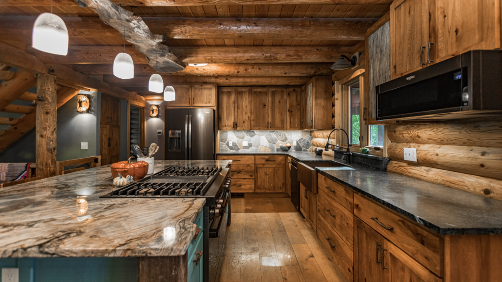

Food is a natural requirement of living beings, allowing the fulfillment of the body through sustenance. However, we should not be treating food as an obligation, but a pleasure. There are many different kinds of recipes for various foods, and not every one of them are the same.
The act of cooking and creating recipes is an art in itself and demands your utmost attention to such activity.
We want to eat food that can benefit our bodies. Sometimes, we just want to eat some good food because we crave something tasty. Either way, there are plenty of recipes out there that people can follow to cook up something really meaningful.
Here are some examples of recipes that you can try out in order to sustain that hunger of yours: